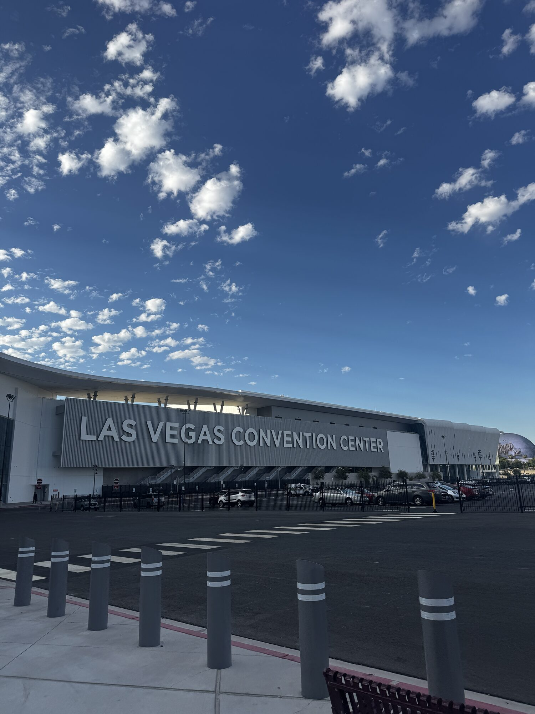
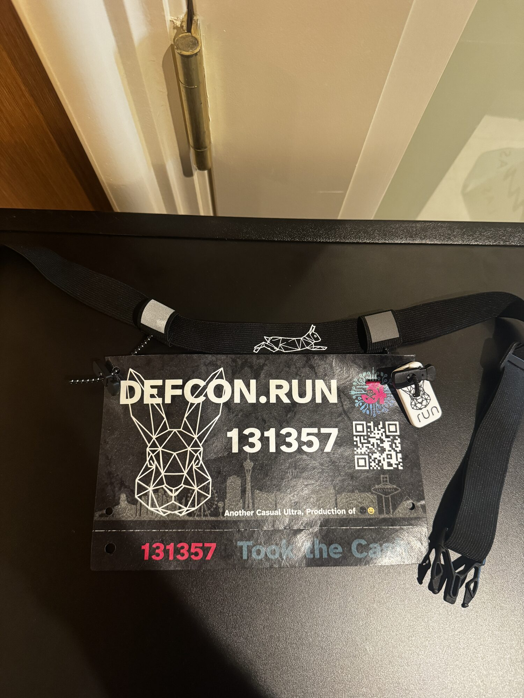
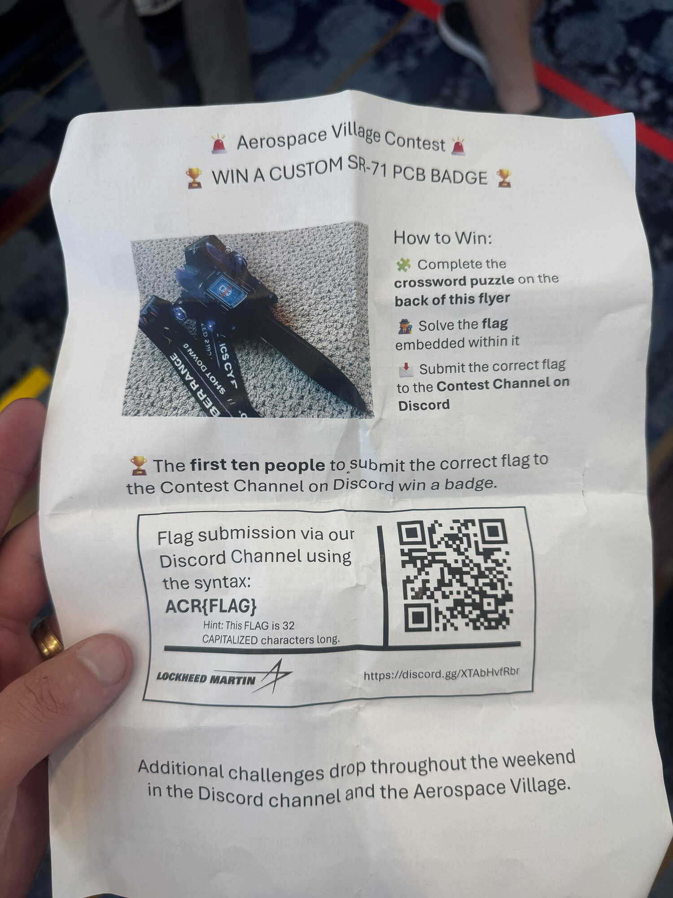
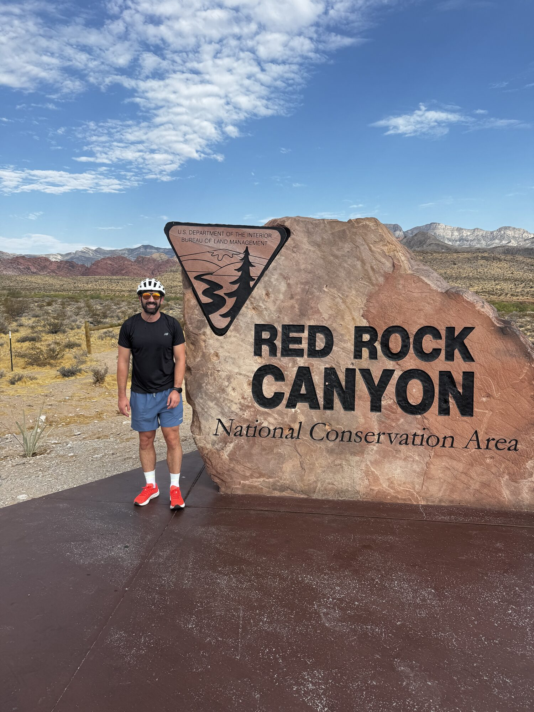
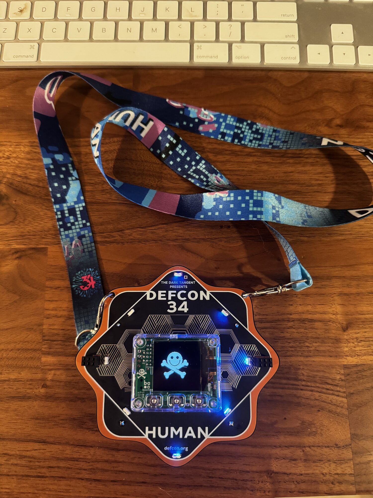
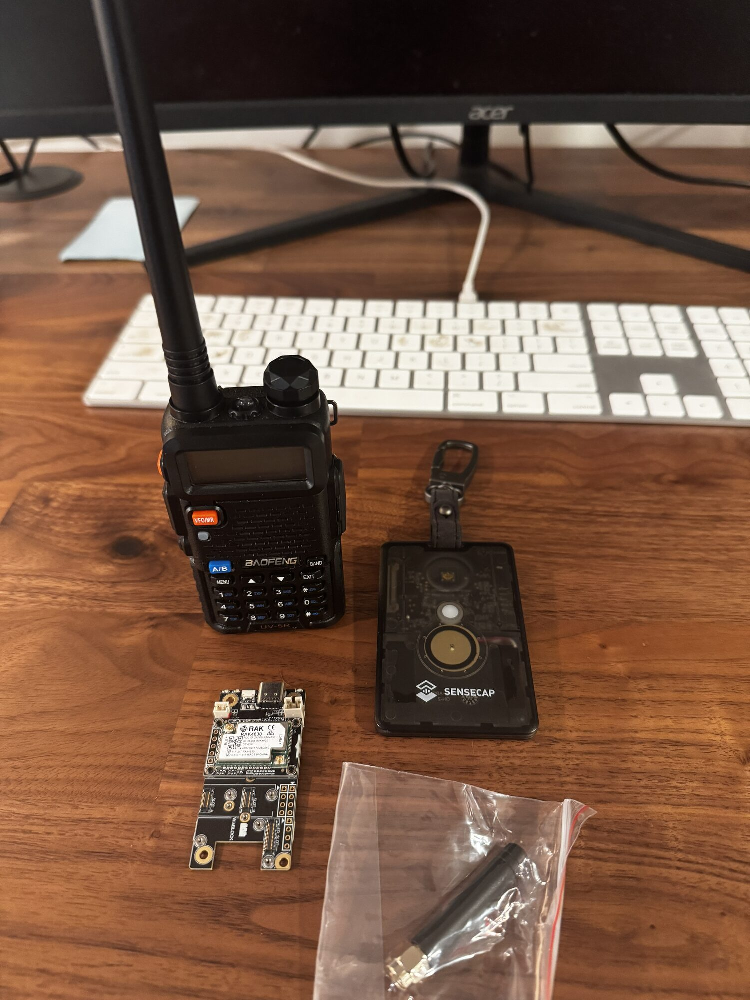

Got My Ham Radio Technician License
Took the FCC Technician exam at DEF CON and passed — officially licensed to get on the air.
// LAS VEGAS, NV — AUG 6-9 2026
First time at DEF CON — four days of talks, villages, badge hacking, and wandering the halls of the Las Vegas Convention Center. This is my recap of what I did, what I learned, and what I'm bringing home to the homelab.
Highlights: the villages and the talks.
Took the FCC Technician exam at DEF CON and passed — officially licensed to get on the air.
Dug into LoRa long-range radio and the Meshtastic mesh network project — off-grid, encrypted text messaging over license-free spectrum. Came home with the hardware to build my own nodes.
Learned about minimal, a free, MIT-licensed collection of ~90 security-hardened container images — languages (Python, Node, Go), databases (Postgres, Redis), proxies (nginx, Traefik), and more. Built on Wolfi packages, rebuilt every six hours to pick up CVE patches, and shipped with signatures and SBOMs. Non-root by default, shell-less where possible — way less attack surface than stock images. Definitely trying these in the homelab.
Also learned that kubectl debug is a thing — it attaches an ephemeral debug container to a running pod, so you can still troubleshoot these shell-less images without baking a shell (and its attack surface) back in.
Attended Anthropic's talk on how hard AI policy actually is, because so much of it is dual-use. The same request — "write me malware" — is malicious in one context and legitimate in another (a pen tester on an engagement, a researcher, a classroom). And if a bad actor uses Claude for something mundane like translating documents, is Claude at fault?
The takeaway: the model needs more context about who the user is and what they intend to make that call, and today a lot of it still comes down to manual review — 11.4 million accounts banned in the first half of 2026. They also covered using evals to probe whether a model will do things it shouldn't — basically unit tests for model behavior.
Still, some limits are required. What they've built so far:
And three ways to enforce it: model refusals, real-time blocks, and account-level monitoring. Biggest impression: this is a fast-moving space with a lot of stakeholders — labs, governments, researchers, everyday users — and nobody has the final answer yet. Watch the recording.





